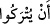

“Elif”, Cenâb-ı Hakk’ın Allah ismine; “Lâm” Lâtîf ismine, “Mîm” Mecîd ismine
işârettir. Allah Teâlâ şöyle buyurur: “Allah benim, bana tâat için yönel. Lâtîf benim,
ibâdetlerde ihlâsı terk etme. Mecîd benim, başkalarının ululuğunu uygun görme.”
Fakir (Bursevî) der ki: İbtilâ, Allah’ın bir lütfudur. Çünkü o, cevheri kevnî
bulanıklarından kurtarmak ve imkân alâkalarından temizlemek içindir. O’nun azamet ve
şânından dolayı her şey O’na boyun eğer; O’nun emredici, râm edici (teshîr)
dâiresinden çıkmağa ve ibtilâyı kabulden kaçınmağa güç getiremez. “Elif”, Allah’ın her
şeyden müstağnî olduğu halde, her şeyin O’na muhtaç olduğuna işâret eder. Elif harfinin
de diğer harflere ihtiyacı olmadığı halde diğerleri onunla birleşmeye muhtaçtırlar.
2. İnsanlar, imtihandan geçirilmeden, sadece “Îman ettik” demeleriyle
bırakılıvereceklerini mi sandılar?
Kâmûs’ta kaydedildiğine göre, “__WORD__ (hısbân)” kelimesi sanmak, zannetmek
anlamına gelir. el-Müfredât’ta ise şöyle der: “__WORD__, zıd iki şeyden birinin lehine
diğerinin aleyhine hükmetmektir.
Bu âyet, Mekke’de müslüman oldukları için Kureyş müşrikleri tarafından ezâ ve cefâ
gören bir grub mü’min hakkında nâzil olmuştur. Bu ezâdan dolayı onların içi daralıyor
ve sabırsızlanıyorlardı. Allah Teâlâ bu âyetle onları teselli etmek istemiştir.
İbn Atâ der ki: Bu âyet-i kerîme, her ne kadar bu mü’minler hakkında nâzil olmuş ise
de mânâsı ümmet-i Muhammed hakkında devamlıdır; hükmü bütün zamanlarda cârîdir.
Âyetin anlamı şudur: Acaba insanlar zannederler mi? Yani, bu zan münker/inkâr
olunmuş ve uzak bir ihtimaldir; böyle zannedilmesin!
“İnsanlar, imtihandan geçirilmeden,” hiçbir imtihana tabî tutulmadan, bu dâvâlarını
isbat edip ortaya çıkarmadan kendi hallerine “sadece “Îman ettik” demeleriyle
bırakılıvereceklerini mi sandılar?”
Yâni Allah onları mutlaka meşakkatli sorumluluk ve mükellefiyetlerle imtihan edecek;
hicret, cihâd, şehvetleri terk, ibâdet, nefis ve malda musîbetlerle sınayacaktır. Böylece
muhlis olan münâfık olandan, dinde râsih olan mütereddid olandan ayrılsın ve
mü’minler sabrederek yüksek derecelere ulaşsınlar. Çünkü sadece îmân ettiğini
söylemek, belki samîmiyetten kaynaklansa da (fiilen ortaya çıkmayınca) ebedî azâba
düşmekten insanı emîn kılmaz.
Âyette geçen “__WORD__ (bırakılıverme)” ifâdesi, müsned ve müsned-i ileyhe şâmil
olmasından dolayı “__WORD__ (sandı)” fiilinin iki mef’ulü yerine geçer.
Âşıkların çok gönül derdi çekmeleri gerekir.
Dostun cevrine, ağyârın da kınamasına tahammülü gerekir.